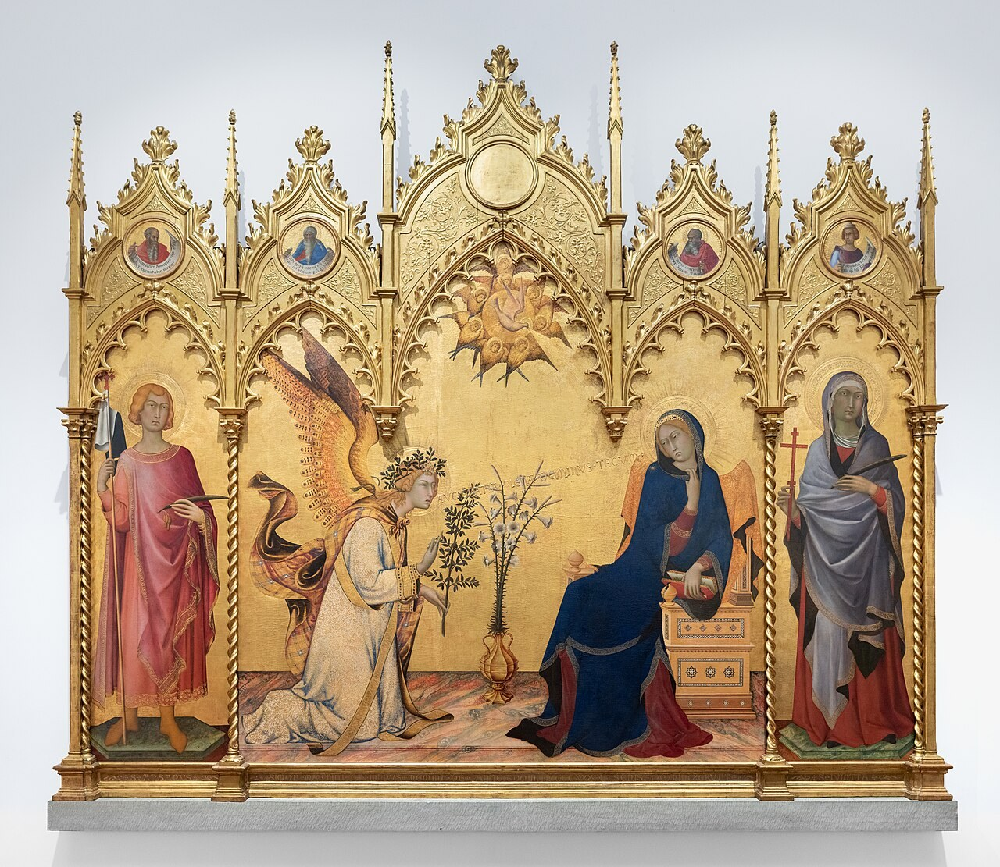
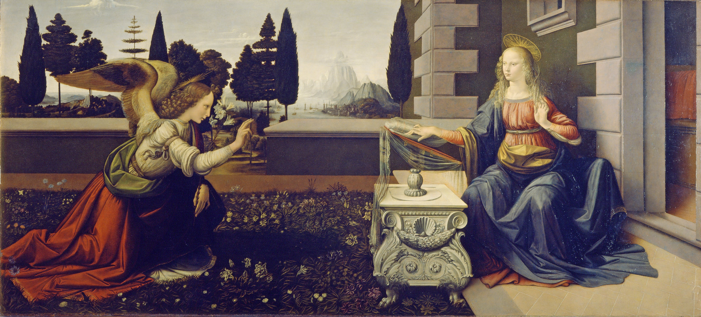
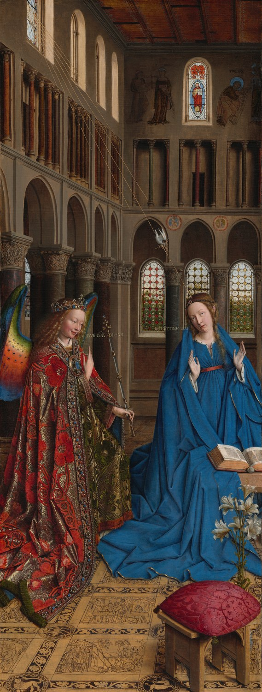
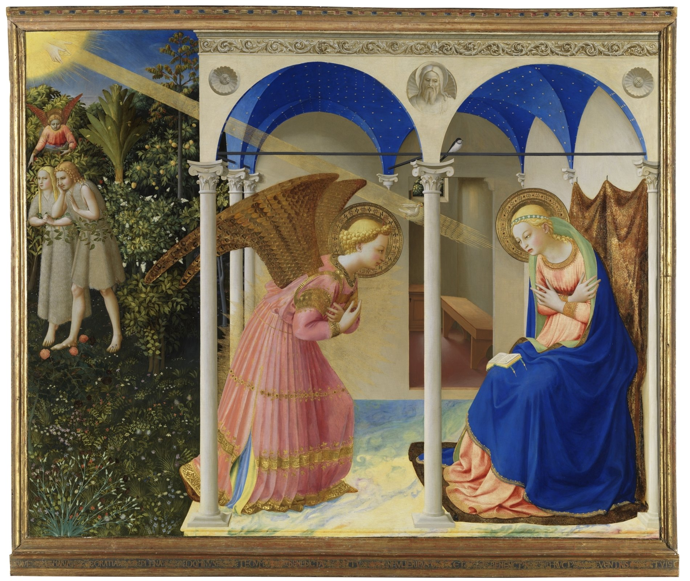

Story guide: Luke 1:26–38 · Mary, Gabriel and the saints in certain altarpieces
Start with the Story
Mary receives a message from Gabriel that she will bear Jesus. In many paintings Gabriel approaches from the left, often kneeling or holding a lily or a message. Mary might be reading, holding a book, or reacting with surprise. The Holy Spirit can appear as a dove in a ray of light.
These are recurring clues, not rules about clothing or positions. Mary may wear blue in one painting but different colors in another. Gabriel can carry a lily, olive branch, scepter, or scroll—or nothing at all.
Not every winged figure is Gabriel. To identify him, ask what the angel is doing and who receives the message. In this story Gabriel announces Jesus' coming birth.
Learn the Main Figures
The Virgin Mary
Biblical
Jesus' mother. In the Annunciation, Gabriel announces that she will bear Jesus.
Look for these clues in different artworks:
Usually the woman receiving a message from an angel in Annunciation scenes
Often wears blue, though her clothing varies
Often shown with a book, a lectern, a lily nearby, or an enclosed garden
Check carefully: A blue robe or a book alone does not prove that a woman is Mary. Identify her role in the story and surrounding figures.
An early Christian martyr and patron of Siena. He is included in Simone Martini and Lippo Memmi's Annunciation because the altarpiece was made for his altar.
Look for these clues in different artworks:
A standing young male martyr on the far left of the altarpiece
A banner showing Siena's traditional black-and-white colors
A martyr's palm
Check carefully: A banner or palm by itself is not unique to Ansanus. The Siena altar's dedication and the painting's history provide important supporting evidence.
Simone Martini's Altarpiece: Saints Alongside the Annunciation

Look at the whole altarpiece. Saint Ansanus is on the far left beside Gabriel; the far-right martyr has an uncertain identity. Zoom in via the linked interactive painting.
Simone Martini and Lippo Memmi painted their 1333 Annunciation for the altar of Saint Ansanus in Siena Cathedral. Saint Ansanus stands at the far left, holding the black-and-white banner of Siena and a martyr's palm. These clues combine with the painting's original purpose to identify him.
The holy woman at the far right is more difficult: the Uffizi identifies her as possibly Saint Maxima or Saint Margaret. The painted inscription is not reliable. We should teach the children that this identity is genuinely debated, instead of demanding a single answer from them. That is good historical reasoning.
Above the central Annunciation are four small prophets identified by the Uffizi as Jeremiah, Ezekiel, Isaiah and Daniel. These prophets lived long before Mary. Their presence symbolizes biblical promises; they were not all standing beside Mary when Gabriel arrived.
These images are already part of Acorn Academy's published Annunciation gallery. First identify the two people by their relationship and actions, then notice what changes between paintings.

Leonardo: lilies and reading desk

Van Eyck: church setting, words and Mary with a book

Fra Angelico (Prado): look for Gabriel, Mary and the separate Adam-and-Eve episode
Simone Martini: compare the greeting, Mary's reaction and the saints outside the central event
Practice Using Several Paintings
Leonardo da Vinci
Gabriel kneels before Mary in an enclosed garden, presenting lilies. Mary is beside a book and lectern.
Ask: Which clues would still work if the artist changed the colors, moved the figures, or removed the lilies? Names learned only from a painting title are not the end of the investigation.